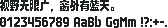

字样资料 / 辰芯像素体10x12
辰芯像素体 LioraChip 10×12
样文完整 · 10×12 · 简体
放大观察 · 3×

原尺寸 · 1×
来源与字样信息
- 家族
- 辰芯像素体10x12
- 字符框
- 10×12 px
- 字符范围
- 简体
- 样本文字
- 视野无限广，窗外有蓝天。
- 拉丁样文
- 0123456789 AaBb GgMm !?:+-.
- 覆盖说明
- 样文完整
- 缺字
- 本次样本文字未发现缺字；不代表完整字库覆盖
- 风格
- 未分类
- 用途
- 像素字体
- 字形来源
- 导入自pixel-fonts-supplement-zeoseven-maoken-2026-08-18/Upstream-GitHub/LioraChen09--LioraChip10x12；上游https://github.com/LioraChen09/LioraChip10x12（HEAD快照，收录于2026-08-18）；由kbitx转换 本轮直接解码 FontPixel BDF 的 BITMAP；不使用系统字体或任何缺字回退。 此字体仍在先行测试期，作者说明整体仍缺大量汉字；本次测试文案覆盖完整不代表全字库完整。 本轮用官方 TTF 直线轮廓按原生格点独立解码，测试字符与本 BDF 逐像素一致（22 个不同非空字符）。 本次修订：按原字库提取繁简对应字与实际显示码位；
- 授权状态
- 已有许可线索
- 许可说明
- OFL-1.1；保留字体名称 Liora。可依协议使用、修改、嵌入与再分发，保留版权许可，不得单独销售字体。
- 说明
- 统一新样文；拉丁字宽按源字体保留，可能为全角、半角或原生不等宽。样文覆盖不代表完整字库覆盖。
- 获取方式
在 fonts 目录获取 LioraChip10x12_261011.ttf；当前为 261011 版，与页面旧快照版本待核对。
- 来源
- 来源项目 / 资料页
- 原生证据
说明：Established native rectilinear pixel-grid decoding, no outline rasterizer, antialiasing, hinting, fallback or substitutions.
查看原生设计来源
仅展示固定字样，不提供字体文件。预览不授予字体使用许可；样文覆盖不等于完整字库覆盖，实际使用前请核实来源项目的适用授权。